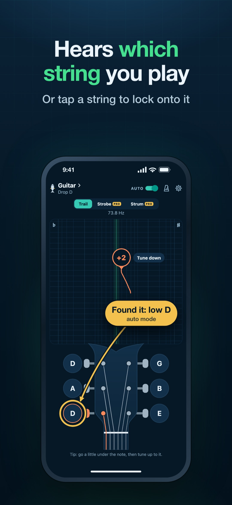

Why phone tuners jump around on the low E string (and read the wrong octave)
A phone tuner jumps around on the low E because the phone's mic barely hears the note you are tuning. It hears the string's harmonics, the attack of your pick and whatever else is ringing, and it has to guess the note from those. Most of the jumping goes away if you pluck with the flesh of your thumb instead of a pick, mute the other strings and give the note half a second before you read it.
The first half of this post is for guitarists: what is going on, and what to do about it. The second half is for developers: how Big Tuna's pitch detection handles the same problems, with code from the app.
Why the low E is the hard one
The note you want is the quietest part of the sound
A plucked string doesn't vibrate at one frequency. It vibrates at its fundamental (the note) and at whole-number multiples of it, the harmonics. For the low E that looks like this:
| Harmonic | Frequency | Sounds like |
|---|---|---|
| 1 (fundamental) | 82.41 Hz | E2, the note you are tuning |
| 2 | 164.81 Hz | E3, one octave up |
| 3 | 247.22 Hz | B3, an octave and a fifth up |
| 4 | 329.63 Hz | E4, two octaves up (the high E string) |
| 5 | 412.03 Hz | close to G♯4 |
| 6 | 494.44 Hz | B4, the B string's octave |
On a low string, a lot of the energy sits in those upper harmonics rather than the fundamental. Your ear still hears E2. A tuner has to work it out, and if it settles on the wrong harmonic it shows the wrong note or the right note in the wrong octave.
Small mics barely hear 82 Hz
Phone and laptop mics are built for voices. They roll off low frequencies, so by the time the low E reaches the tuner its fundamental is weaker still compared with the harmonics. With the second harmonic strong and the fundamental faint, the waveform almost repeats every half cycle, and a tuner that looks for the repeat reads E3: one octave high.
The pluck itself is noisy and sharp
The first instant of a pluck is a burst of noise, and the string really is sharp for that instant: it swings wide and pulls tighter before it settles. A tuner that shows the attack shows a jump up, then a slide back down.
Other strings are ringing too
The string you tuned a moment ago is still ringing, and the open strings ring along by sympathy. Neighbouring strings are a fourth apart, so two of them together repeat at a slower, common rate that isn't either note. A tuner that only looks for the repeat can read a note well below anything you played. That is the other kind of octave error: reading low.
The note drifts and fades
After the attack the pitch settles by a few cents, and as the string dies away it gets quiet enough that room noise starts to compete. A reading taken at the very start or the very end of a note is the least trustworthy one.
Why the wrong octave matters: an octave-high reading just looks odd. An octave-low reading on a string you have locked to is worse: the tuner says the string is far too low, you keep tightening, and the string breaks.
How to get a steady reading
- Pluck with the flesh of your thumb, around the 12th fret. A soft thumb gives a gentler attack than a pick. The 12th fret is the middle of the string, and plucking at the middle barely excites the even harmonics, including the octave above, so the fundamental stands out more.
- Mute the other strings. Rest your fretting hand lightly across the strings you aren't tuning. This stops the last string you tuned, and the open strings, from ringing under the one you are tuning.
- Wait a beat after the pluck. Ignore the first flicker. Read the tuner once the note has settled, and pluck again before it fades out.
- Get the phone close. Hold it near the soundhole or the bridge. A louder signal makes the faint fundamental easier to hear over the room, the fridge and the fan.
- Lock the tuner to the string. In auto mode the tuner has to guess which string you played. An octave-high low E is two semitones from the D string, so auto mode can decide you are playing a sharp D. Locked to the low E, the tuner knows what to expect.
Tip: tune up to the note, not down to it. If you overshoot, go a little under and come back up. That takes up the slack in the tuning machine, so the string holds its pitch better.

In Big Tuna: tap a string on the headstock to lock it. If you then play a different string, the tuner says which one it sounds like rather than telling you to tighten.
How Big Tuna handles it
This part is for developers. Big Tuna is a React Native app, and the pitch detection is plain TypeScript in src/pitch/: no native DSP module. The same code runs on Hermes, in the browser and under bun test, and a replay script feeds recordings through the whole engine offline.
The engine's own summary of the problem is the one from the first half of this post: on a real guitar the string being tuned is rarely alone. Most of the code is about not mistaking the other strings, the harmonics and the room for the note.
Getting clean audio in
On iOS the audio session runs in measurement mode, which turns off the system's voice processing (automatic gain and noise gate). That processing would otherwise squash a quiet, sustained note. On the web, getUserMedia is called with echo cancellation, noise suppression and auto gain control all off.
The tuner analyses the newest frame on every mic buffer, about every 22 ms. A gentle high-pass just under the lowest string runs on the incoming stream to take out handling noise and room rumble. Each frame is then downsampled to about 22–24 kHz and filtered:
- A low-pass at three times the top of the detection range (never below 800 Hz), run twice forwards and twice backwards: 48 dB per octave and zero phase. That cuts hiss, fan whine and clicks.
- The frame's linear trend is subtracted, which removes DC offset.
- The low-pass keeps several harmonics on purpose, because the period can be found from them when the fundamental is faint, and the rumble filter sits low enough (1.2 times the lowest frequency searched) that the lowest string only loses about 3 dB of its fundamental.
The detection range runs from 5 semitones below the lowest string of the tuning to 9 above the highest. The frame is sized to hold at least 2.6 periods of the lowest frequency in that range: 4096 samples at the mic’s sample rate, doubled as needed, up to 16384.
YIN, with an octave check
The period detector is YIN (de Cheveigné and Kawahara, 2002). It compares the frame with delayed copies of itself, normalises the differences, and takes the first delay whose difference dips under a threshold (0.15) as the period. The difference function runs on an FFT, so even the longest frames stay cheap.
Plain YIN takes the first good dip, which is exactly the octave-high error from above: with a faint fundamental, the half-period dip is good enough. So after picking a dip, it looks at twice that delay:
// With a phone mic the fundamental of a low string is faint, and if the
// odd harmonics are weak too the waveform nearly repeats every half
// period, so the first dip is an octave high.
const doubled = best * 2;
if (doubled + 3 <= maxLag) {
let deep = doubled;
for (let tau = doubled - 2; tau <= doubled + 2; tau++) if (d[tau] < d[deep]) deep = tau;
const here = dipDepth(best);
if (here > 0.01 && dipDepth(deep) < here * 0.5) best = deep;
}The bar is deliberately high: the dip at double the delay has to be less than half as deep before the reading drops an octave. An octave-low reading is the more harmful error, so the check leans against making one.
YIN also hands back every dip shallower than 0.75 as a candidate, not just the one it picked. With two strings ringing, the deepest dip is often their common subharmonic, so the engine makes the final call itself.
Ignoring the attack
A note starts when a frame is clearly periodic (clarity of at least 0.65), at least 3.2 times the learned room level (about 10 dB), and shows a pluck: either the level jumps to 1.6 times the quietest of the last three frames, or at least 35% of the spectrum is new since the frame before. That second test, spectral flux, catches a pluck that is quieter than a string still ringing, because a pluck adds partials where there were none while a ringing string only fades.
Then the note is read about 0.1 s in. The string is sharp for its first instant, and the analysis frame still holds sound from before the pluck. A new pitch only shows once readings have agreed on it for 40 ms, which stops one- and two-frame flashes of the wrong string at each pluck, so the first reading appears about 0.16 s after the pluck.
Which note: the energy the pluck added
Periodicity alone can't tell a D3 and A2 ringing together from a lone D2. The code comment has a concrete case: plucking the G with the D still ringing reads 49 Hz, their common subharmonic. What tells them apart is what changed. When a pluck is detected, the engine keeps the spectrum of the frame from just before it. After the attack it scores each YIN candidate, and twice, three and four times each candidate, by how much new energy lines up with its harmonic series:
// Per partial of `frequency`: how much louder it is now than before the pluck.
for (let h = 1; h * frequency <= maxFrequency; h++) {
const peak = strongestGainNear(h * frequency); // now[k] - before[k], within a few cents
slots++;
if (peak > floor) {
filled++;
sum += Math.sqrt(peak - floor); // square root: one loud partial can't carry a candidate
}
}
// A note has most of its partials; a subharmonic has half at most.
return sum * Math.min(1, filled / (slots * 0.75));The square root matters on a phone: its mic drops a low string's fundamental, and the even partials carry most of the energy, so with plain sums the octave above won. A subharmonic covers everything the real note does plus empty slots in between, and the fill ratio marks it down for them.
Two YIN checks then remove candidates the spectrum alone can't. One is dropped when the frame repeats as cleanly at half its period (it is an octave too low). The other case came from low bass strings, where the frame is long and the spectrum’s bins are 11 Hz wide: a note a fifth below the real one has every slot of its series inside the shoulder of a real partial, so it looked fully supported. A candidate is now also dropped when the frame repeats almost perfectly at 2/3 of its period while its own dip is shallow. The same string plucked again counts only partly as “new”, so a re-pluck doesn’t jump to a neighbour.
How far off: the note's own partials
Once the note is known, YIN's dip isn't used for the cents reading, because another ringing string shifts it by several cents. Instead the engine measures the first six partials of the note one by one, each at the exact peak of the windowed spectrum, and skips any that sit within 2.2 bins of a partial from whatever was ringing before the pluck. Any partial that sits off the others is down-weighted.
Real strings are stiff, so each partial sits a little sharper than a whole multiple. With three or more partials the engine fits that drift and reads the first partial from the fit, instead of a plain average that would come out slightly sharp.
From then on, each frame is measured near the previous reading. A frame that briefly loses the note is skipped, and the note only ends after more than three misses in a row or when the level falls back toward the room.
Smoothing and picking the string
Readings go through two smoothers, in MIDI units so a cent is the same size on every string:
- A median of the readings from the last 100 ms. Readings more than 0.6 semitones from the newest one drop out of the window, and a jump has to hold for 40 ms (110 ms when the same string is plucked again) before it shows. One stray frame (a harmonic, a knock) can't move the display.
- A One Euro filter for the needle: heavy smoothing while the pitch holds still, light smoothing while you turn a peg, so a held note reads as a steady number and the needle still keeps up with the peg.
In auto mode, a fresh pluck within a semitone of a string switches to it straight away. Otherwise another string has to be 0.35 semitones closer than the current one for three readings in a row, so a badly detuned string doesn't flip between neighbours.
Whenever there is a target string, one last guard folds octave errors back. A string can be very flat, but a few semitones sharp and it breaks, so a reading more than 4 semitones sharp or more than 9 flat is treated as an octave error:
const MAX_SHARP = 4; // semitones
const MAX_FLAT = -9;
export function foldOctaves(diff: number): number {
if (diff > MAX_SHARP) {
let best = diff;
for (let d = diff - 12; d >= -WAY_OFF; d -= 12) if (Math.abs(d) < Math.abs(best)) best = d;
return best;
}
if (diff < MAX_FLAT) {
let best = diff;
for (let d = diff + 12; d <= MAX_SHARP; d += 12) if (d >= MAX_FLAT && Math.abs(d) < Math.abs(best)) best = d;
return best;
}
return diff;
}Sharp readings only fold down as far as 3 semitones flat (WAY_OFF), so a misread harmonic can at worst say “loosen”, never “tighten five semitones”. When you are locked to one string and the sound is within half a semitone of a different string (and at least 1.5 semitones from yours), the tuner says “Sounds like” that string instead of giving advice.

Hum isn't a string
One more source of false readings: mains hum and appliances. A plucked string decays, hum doesn't. A quiet note that holds its level within about 2 dB for 1.5 seconds without having been plucked is folded into the room level, and so is a steady note at 50, 60, 100 or 120 Hz, however loud.
Testing it
None of this was tuned by ear alone. The tests build synthetic guitar sessions the way a phone hears them: a weak fundamental, stronger low harmonics, slightly stiff strings, a short attack and room noise, with the previous string still ringing when the next one is plucked. One test plucks the high E over the low E, which shares every one of its partials, and checks that the reading is the high E. Recordings from the app can be replayed through the same engine to check a fix against the sound that broke it.
The trade-offs
- Readings appear a moment after the pluck, not on it. Skipping the attack is the point, but it is a visible delay.
- If every partial of the note is crowded by another string's, that frame gives no reading at all rather than a wrong one. Muting the other strings fixes it.
- The octave guards assume a string is never tuned far sharp. That holds for a real string, which would break first.
None of this makes a phone mic hear 82 Hz any better. It just stops the tuner from trusting the wrong thing, and the five fixes above do the rest.
Read next
The Big Tuna - Guitar TunerFree tuner for guitar, bass, ukulele and 12 more instruments. No ads, no account. Coming to the App Store and Google Play; Android testers can join the beta.